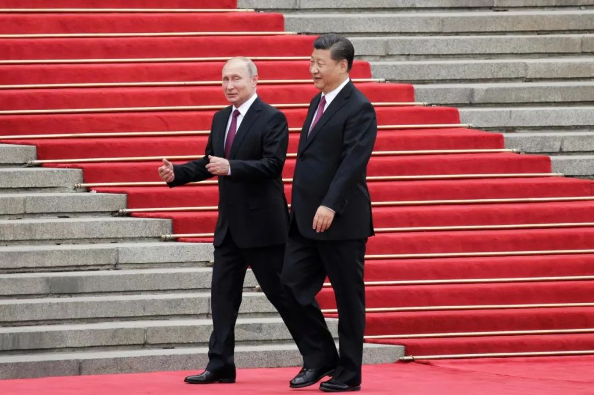

收录于合集

简 介
【作者】 ** 格雷厄姆·艾利森**(Graham T. Allison)是哈佛大学肯尼迪政府学院首任院长，他曾任哈佛大学贝尔弗中心主任，在克林顿政府出任助理国防部长。他曾在去年出版的《注定一战：中美能否走出“修昔底德陷阱”？》一书中深度剖析“修昔底德陷阱”理论，他在书中详述过去500年间发生在守成大国与崛起大国间的权力更迭，列举的16个案例中共有12个引发战争，仅4次幸免。不过，对于未来中美是否能避免一战，艾利森态度谨慎，并未在书中作出预判。
【来源】
The National Interest, December 14, 2018
【译者】 张 耀
格雷厄姆·艾利森(Graham T. Allison)
“与西方分析人士长期以来的信念相反，面对巨大的结构性分歧，北京和莫斯科正日益靠拢，以应对各自眼中的美国威胁。”
中俄两国的国家安全文件称两国关系为“全面战略协作伙伴关系”。 根据习的说法，这是“世界上最重要的双边关系，也是大国之间关系的典范。”中国驻俄罗斯大使李辉说:“中国和俄罗斯现在唇齿相印。”俄罗斯外交部的措辞是“全面、平等、互信的伙伴关系和战略合作”。就连“阿尔法男”（时下人们把在群体中游刃有余、一切尽在掌握之中的“老大型”男性，称为“阿尔法男”，编者注）普京也找到了一种巧妙的方式，公开承认俄罗斯在这一伙伴关系中的次要地位，他说，“目前正在进行的主要斗争是争夺全球领导地位，我们不会在这一点上与中国竞争。”
大多数美国专家不看好中俄军事合作。在谈到今年历史性的军事演习时，美国国防部长马蒂斯（Mattis）表示:“我认为，从长期来看，俄罗斯和中国几乎没有什么共同点。”在这次演习中，3000名中国士兵与30万俄罗斯军人一起演练了与北约（NATO）在东欧发生冲突的场景。
他（特指马蒂斯，编者注）应该更仔细地看。一位俄罗斯前高级国家安全官员向我描述的情况，是一个“功能性军事联盟”。俄罗斯和中国的军官们现在就美国的核现代化和导弹防御系统对他们各自的战略威慑力量构成的威胁进行了坦率、详细的讨论。几十年来，在向中国出售武器时，俄罗斯谨慎地保留了最先进的技术，但是近年来则不再出现。俄罗斯不仅向中国出售最先进的防空系统S-400，而且还积极与中国合作，共同研发火箭发动机和无人机。两国海军2015年在地中海、2016年在南海、2017年在波罗的海举行联合军事演习，与美国海军相比优势明显印度的军事演习。正如一位中国同事坦率指出的那样，如果美国发现自己在南中国海与中国发生冲突，它应该期待普京在波罗的海做些什么?

在外交上，俄罗斯和中国反映了两位领导人之间的关系：在重大国际问题上协调立场。 例如，在联合国安理会投票时，他们98%的时候意见一致。自2007年以来，俄罗斯支持中国的每一项否决权。两国共同努力，建立和加强新的组织，与美国领导的传统国际组织竞争，包括上海合作组织和金砖国家。对于一个想要访问中国的俄罗斯人来说，获得签证需要一天的时间；他们去美国要花300天时间才能得到签证面谈。
在经济上，俄罗斯正在缓慢但肯定地转向东方。 中国已经取代美国和德国成为莫斯科最大的贸易伙伴。如今，中国是俄罗斯原油的最大买家。十年前，俄罗斯所有的天然气管道都向西输送。随着西伯利亚电力管道2019年竣工，中国将成为俄罗斯天然气的第二大市场，仅次于德国。
当以美国为首的西方制裁把俄罗斯排除在美国主导的以美元计价的市场之外，俄罗斯与中国的经贸关系变得更加具有可持续性。在美国目前阻止伊朗向世界出售石油的努力中，俄罗斯用伊朗石油交换商品，然后再卖给包括中国在内的国际市场。
与此同时，俄罗斯精英们继续把目光投向西方。 他们在文化、历史、宗教和梦想方面主要是欧洲人。富裕的俄罗斯人在伦敦、纽约和法国里维埃拉购买第二（和第三）套住房。他们说英语，然后去巴黎、纽约或伦敦购物。许多人的孩子生活在西方。
文化变革是艰难而缓慢的。但寡头们现在发现自己成了制裁的目标，这些制裁阻止他们在美国做生意，他们正在探索替代方案。 俄罗斯的一些主要思想家正在改变他们的论调。俄罗斯外交和国防政策委员会名誉主席谢尔盖卡拉加诺夫（Sergey Karaganov）认为，“今天的‘西方化’已经成为过去。”对未来最感兴趣的是东方。今年的调查显示，69%的俄罗斯人对美国持负面看法，同样比例的俄罗斯人对中国持正面看法。当被问及“谁是他们的敌人”时，三分之二的俄罗斯人指向美国，认为美国是俄罗斯最大的敌人。只有2%的俄罗斯人视中国为敌人。
不满是一种强大的动力，尊重能产生强大的磁力。 在普京看来，20世纪最大的地缘政治灾难是苏联解体。谁对那次分手负责？在习看来，中国的“百年屈辱”只有在共产党在血腥的内战中击败国民党之后才结束。哪个国家支持这些民族主义者，并继续武装他们的台湾堡垒？在这段历史的背景下，当我们反思美国现在正在做的事情时，我们应该问布热津斯基关于“最危险的情况”的警告是否会很快成为现实。
*** 本文由国政学人微信公众平台编译首发，作者观点不代表本平台观点。**
更多阅读
国政学人 （ID：guozhengxueren)
为方便学人及时阅读高质量文章
别忘把国政学人设置 星标 哦~